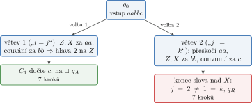
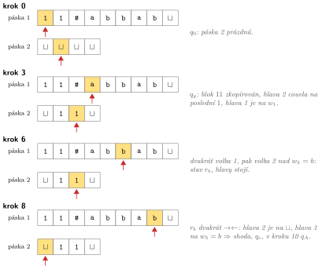
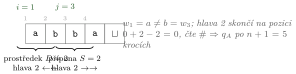
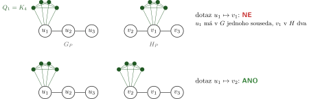

4.9 Úlohy navíc¶
Úlohy procvičují dva typy úloh zápočtového testu, které patří k této kapitole: návrh nedeterministického stroje metodou Guess & Verify (úloha 1 testu, oddíly 4.3 a 4.7) a self-redukci, tedy nalezení řešení pomocí orákula pro rozhodovací verzi (úloha 2 testu, postup A.3.2). K tomu certifikátová definice \(\href{ch-np-tridy-nedeterministicke-casove-slozitosti.html#def-ntime}{\class{woo-pk-def-ntime}{\NP}}\) (oddíl 4.5). Pododdíl 4.9.4 přidává úlohu z jiné sbírky: hledání izomorfismu grafů pomocí orákula pro rozhodovací verzi. Části úloh 4.1 b), 4.4 d) a 4.8 b) o deterministickém stroji s logaritmickým prostorem patří k úloze 1 testu, ale stroj se vstupní páskou jen pro čtení a třídu \(\href{../ch-prostor/ch-prostor-logaritmicky-prostor-l-a-nl.html#def-lnl}{\class{woo-pk-def-lnl}{\LL}}\) zavádí až kapitola 12; k jejich řešení stačí rámeček o prostoru v postupu A.3.1.
Neoficiální úlohy
Úlohy v tomto oddílu nejsou oficiální zadání předmětu. Jsou to procvičovací úlohy navíc k látce kapitoly. Stroje z úloh 4.1, 4.4 a 4.8 jsou naprogramované a odsimulované (všechny větve) na všech vstupech do délky 11, 9, resp. 12, včetně meze na délku větví. Algoritmy s orákulem z úloh 4.2, 4.5 a 4.7 běžely se simulovaným orákulem (hrubou silou) na 1500–3000 náhodných malých instancích a výsledky jsme porovnali s optimem; průběhy v příkladech a všechna čísla spočítal program. Certifikáty z úlohy 4.3 a algoritmus z úlohy 4.6 jsou porovnané s hrubou silou na malých instancích. U úlohy 4.9 jsme tvrzení o značkách porovnali s hrubou silou (všechny bijekce) na 400 náhodných dvojicích grafů do 5 vrcholů a celý algoritmus spustili na 300 náhodných dvojicích izomorfních grafů do 6 vrcholů; průběh v části c) spočítal skript. Deterministické algoritmy s logaritmickým prostorem z úloh 4.1, 4.4 a 4.8 jsou naprogramované jen s čítači a porovnané s definicí jazyka na všech slovech do délky 10, 9, resp. 14.
4.9.1 Rozcvička¶
Úloha 4.1 (NDTS: \(i=j\) nebo \(j=k\))
Uvažujte jazyk
Např. \(aabbc\in L\), \(abbcc\in L\), \(\varepsilon\in L\), \(c\in L\), \(aabbbc\notin L\), \(b\notin L\), \(acb\notin L\).
- Popište nedeterministický dvoupáskový Turingův stroj, který rozhoduje \(L\) tak, že každá větev jeho výpočtu na vstupu délky \(n\) skončí po nejvýše \(n+2\) krocích. Řekněte, kde stroj hádá, uveďte význam stavů a zdůvodněte správnost i odhad.
- Popište deterministický Turingův stroj se vstupní páskou pouze pro čtení, který rozhoduje \(L\) s pracovním prostorem \(O(\log n)\). Zdůvodněte odhad prostoru. (Formální přechodovou funkci nepožadujeme.)
Řešení
a) Nedeterministický stroj, každá větev nejvýše \(n+2\) kroků
Myšlenka (Guess & Verify). V prvním kroku stroj uhodne, kterou rovnost ověří. Každá z obou větví je pak deterministická a jedním průchodem porovná dva bloky jako stroj pro \(a^nb^n\) z cvičení 1.2: za písmena prvního bloku píše značky na pásku 2, za písmena druhého bloku hlavou 2 couvá. První zapsaná značka je \(Z\) („dno“), další \(X\). Druhý blok má správnou délku, právě když na jeho konci hlava 2 čte \(Z\).
Stavy a přechody (\(s\) je libovolný symbol, nevypsané situace vedou do \(\qR\)):
- \(q_0\) (počáteční, hádání):
- \((s,\blank)\): nedeterministicky do \(S_1\) („\(i=j\)“), nebo do \(S_2\) („\(j=k\)“); hlavy stojí. Jediné nedeterministické místo.
- \(S_1\):
- začátek větve \(i=j\). \((a,\blank)\): zapiš \(Z\), hlavy \(\Rgt\Rgt\), do \(A_1\). \((c,\blank)\): \(i=j=0\), do \(C_1\) (hlava 1 \(\Rgt\)). \((\blank,\blank)\): prázdné slovo, přijmi. \((b,\blank)\): \(j>0=i\), zamítni.
- \(A_1\):
- čte blok \(a\), na pásce 2 je \(ZX^{i'-1}\). \((a,\blank)\): zapiš \(X\), hlavy \(\Rgt\Rgt\). \((b,\blank)\): hlavy \(\Rgt\Lft\), do \(B_1\). Na \(c\) nebo \(\blank\) zamítne (\(i>0=j\)).
- \(B_1\):
- čte blok \(b\); po \(t\) přečtených \(b\) stojí hlava 2 na pozici \(i-t\) (pozice 0 nese \(Z\)). \((b,X)\), \((b,Z)\): hlavy \(\Rgt\Lft\). \((c,Z)\): \(j=i\), do \(C_1\) (hlava 1 \(\Rgt\), hlava 2 stojí). \((\blank,Z)\): \(j=i\) a \(k=0\), přijmi. Cokoli jiného – \((b,\blank)\), konec bloku nad \(X\) nebo nad \(\blank\), písmeno \(a\) – zamítne.
- \(C_1\):
- dočte blok \(c\) (hlava 2 stojí); na \(\blank\) přijme, na \(a\) nebo \(b\) zamítne.
- \(S_2\), \(A_2\), \(B_2\):
- větev \(j=k\): totéž o písmeno posunuté. \(S_2\) přeskakuje \(a\) (hlava 2 stojí), na prvním \(b\) zapíše \(Z\) a jde do \(A_2\), na \(\blank\) přijme (\(j=k=0\)), na \(c\) zamítne (\(k>0=j\)). \(A_2\) píše \(X\) za \(b\) a na prvním \(c\) přejde do \(B_2\) (hlavy \(\Rgt\Lft\)); \(B_2\) couvá za každé \(c\) a přijme na \((\blank,Z)\).
Celkem 8 stavů (bez \(\qA\), \(\qR\)) a 31 přechodů.

Strom výpočtu na \(aabbc\) (\(n=5\)) má jen dvě větve. Přijme větev 1, proto \(aabbc\in L\); obě mají \(n+2=7\) kroků.
Správnost. (\(x\in L\Rightarrow\) přijme) Je-li \(x=a^ib^jc^k\) s \(i=j\), přijme větev 1: \(S_1\)/\(A_1\) zapíší \(i\) značek (pozice \(0,\dots,i-1\), na pozici 0 je \(Z\)), \(B_1\) po \(j=i\) písmenech \(b\) stojí na pozici 0 nad \(Z\) a \(C_1\) dočte \(c^k\). Pro \(i=j=0\) přejde \(S_1\) rovnou do \(C_1\) nebo přijme. Pro \(j=k\) symetricky větev 2. (Přijme \(\Rightarrow x\in L\)) Přijímající větev prošla stavy v pořadí, které vynucuje tvar \(a^*b^*c^*\). Ve větvi 1 přijetí nastane jen nad \(Z\) na konci bloku \(b\) (nebo bez jediného \(a\) i \(b\)), tedy po \(j\) písmenech \(b\) je hlava 2 na pozici \(i-j=0\), a \(i=j\); ve větvi 2 stejně \(j=k\).
Čas. Hádání je jeden krok, v němž hlavy stojí. Každý další krok kromě posledního posune hlavu 1 doprava (také v \(C_1\) a v \(S_2\) nad \(a\)) a za pozici \(n\) se hlava 1 nedostane, protože na \(\blank\) každý stav končí. Proto má každá větev nejvýše \(1+n+1=n+2\) kroků. Certifikát je jediný bit (číslo větve), takže \(L\) je dokonce v \(\href{../ch-cas/ch-cas-tridy-p-a-exp.html#def-tridy}{\class{woo-pk-def-tridy}{\PP}}\) – deterministický stroj prostě zkusí obě větve za sebou.
b) Deterministický stroj s logaritmickým prostorem Hádat není co: obě rovnosti lze spočítat. (1) Prvním průchodem zkontroluje stroj stavem tvar \(a^*b^*c^*\). (2) Druhým průchodem spočítá binární čítače \(I=\#_a\), \(J=\#_b\), \(K=\#_c\) na pracovní pásce. (3) Přijme, právě když \(I=J\) nebo \(J=K\) (porovnání bit po bitu). Tři čítače s hodnotami nejvýše \(n\) zabírají \(3\lceil\log_2(n+1)\rceil+O(1)=O(\log n)\) buněk; kontrola tvaru prostor nepotřebuje. (Ověřeno proti definici na všech slovech do délky 10.)
Úloha 4.2 (nejmenší pokrytí množinami z orákula)
Problém \(\href{../ch-is/sec-cv3.html#cv-3-4}{\class{woo-pk-pojem-set-cover}{\prob{Set Cover}}}\):
Vstup: konečná množina \(U\), podmnožiny \(S_1,\dots,S_m\subseteq U\) a číslo \(k\).
Otázka: lze vybrat nejvýše \(k\) z množin \(S_1,\dots,S_m\) tak, aby jejich sjednocení bylo celé \(U\)?
Máte k dispozici orákulum pro tuto rozhodovací verzi. Navrhněte algoritmus, který pomocí orákula najde nejmenší pokrytí (co nejméně množin se sjednocením \(U\)), nebo oznámí, že žádné pokrytí neexistuje. Zdůvodněte správnost a odhadněte počet dotazů. Algoritmus proveďte pro \(U=\{1,\dots,6\}\) a \(S_1=\{1,2,3\}\), \(S_2=\{3,4\}\), \(S_3=\{4,5,6\}\), \(S_4=\{1,4\}\), \(S_5=\{2,5\}\), \(S_6=\{3,6\}\).
Řešení
Redukce s orákulem: \(\href{../ch-is/sec-cv3.html#cv-3-4}{\class{woo-pk-pojem-set-cover}{\prob{Set Cover}}}\) – nejmenší pokrytí \(\to\) \(\href{../ch-is/sec-cv3.html#cv-3-4}{\class{woo-pk-pojem-set-cover}{\prob{Set Cover}}}\) – rozhodovací verze. Jak: velikost optima binárním vyhledáváním, pak množiny po jedné vyškrtáváme, dokud orákulum potvrzuje, že pokrytí této velikosti ze zbylých množin pořád jde složit.
Značení: \(O(R;\,k)\) je odpověď orákula na univerzum \(U\), množiny s indexy z \(R\subseteq\{1,\dots,m\}\) a číslo \(k\).
Algoritmus.
- Zeptej se \(O(\{1,\dots,m\};\,m)\). Při \(\NE\) nepokryjí \(U\) ani všechny množiny dohromady – pokrytí neexistuje, konec.
- Velikost optima. Odpověď \(O(\{1,\dots,m\};\,k)\) je monotónní v \(k\) (\(\NE\) pro \(k<k^*\), \(\ANO\) pro \(k\ge k^*\)). Binární vyhledávání na \([\mathit{lo},\mathit{hi}]=[0,m]\): pro \(\mathit{mid}=\lfloor(\mathit{lo}+\mathit{hi})/2\rfloor\) při \(\ANO\) polož \(\mathit{hi}=\mathit{mid}\), jinak \(\mathit{lo}=\mathit{mid}+1\). Skončí při \(\mathit{lo}=\mathit{hi}=k^*\).
- Vyškrtávání. \(R:=\{1,\dots,m\}\). Pro \(i=1,\dots,m\), dokud \(|R|>k^*\): zeptej se \(O(R\setminus\{i\};\,k^*)\); při \(\ANO\) polož \(R:=R\setminus\{i\}\), při \(\NE\) množinu \(S_i\) ponech.
- Vydej množiny s indexy z \(R\).
Invariant: množiny s indexy z \(R\) obsahují pokrytí \(U\) o nejvýše \(k^*\) množinách. Na začátku kroku 3 platí díky volbě \(k^*\), krok \(\ANO\) ho zachová podle odpovědi orákula a krok \(\NE\) nic nemění.
Proč na konci \(R\) je nejmenší pokrytí. Nechť \(C\subseteq R\) je pokrytí z invariantu pro výsledné \(R\). Má aspoň \(k^*\) množin (menší pokrytí neexistuje), tedy přesně \(k^*\). Skončil-li cyklus podmínkou \(|R|=k^*\), je \(R=C\). Jinak byla otestována všechna \(i\): kdyby existoval index \(j\in R\setminus C\), byla při jeho testu tehdejší množina \(R'\) nadmnožinou výsledné \(R\) (indexy jen ubývají), takže \(C\subseteq R'\setminus\{j\}\) a orákulum by odpovědělo \(\ANO\) – \(S_j\) by byla vyškrtnutá. Spor, tedy \(R=C\) a výsledek je pokrytí o \(k^*\) množinách.
Počet dotazů: nejvýše \(1+\lceil\log_2(m+1)\rceil+m\). Každý dotaz se ptá na podsystém vstupních množin a číslo nejvýše \(m\), takže je nejvýše o \(O(\log m)\) bitů delší než vstup.
Průběh pro zadanou instanci (\(k^*=2\), 10 dotazů, mez \(1+3+6=10\)):
| dotaz | množiny | \(k\) | odpověď | akce |
|---|---|---|---|---|
| 1 | \(S_1,\dots,S_6\) | 6 | \(\ANO\) | pokrytí existuje |
| 2 | \(S_1,\dots,S_6\) | 3 | \(\ANO\) | \(\mathit{hi}=3\) |
| 3 | \(S_1,\dots,S_6\) | 1 | \(\NE\) | \(\mathit{lo}=2\) |
| 4 | \(S_1,\dots,S_6\) | 2 | \(\ANO\) | \(\mathit{hi}=2\), tedy \(k^*=2\) |
| 5 | \(S_2,S_3,S_4,S_5,S_6\) | 2 | \(\NE\) | \(S_1\) ponech |
| 6 | \(S_1,S_3,S_4,S_5,S_6\) | 2 | \(\ANO\) | \(S_2\) vyškrtni |
| 7 | \(S_1,S_4,S_5,S_6\) | 2 | \(\NE\) | \(S_3\) ponech |
| 8 | \(S_1,S_3,S_5,S_6\) | 2 | \(\ANO\) | \(S_4\) vyškrtni |
| 9 | \(S_1,S_3,S_6\) | 2 | \(\ANO\) | \(S_5\) vyškrtni |
| 10 | \(S_1,S_3\) | 2 | \(\ANO\) | \(S_6\) vyškrtni, \(|R|=2\) |
Výsledek: \(S_1\cup S_3=\{1,2,3\}\cup\{4,5,6\}=U\). Jednou množinou \(U\) pokrýt nejde (dotaz 3), takže je pokrytí nejmenší.
4.9.2 Základní úlohy¶
Úloha 4.3 (certifikáty a pasti)
Pro každý problém rozhodněte, zda je známo, že patří do \(\href{ch-np-tridy-nedeterministicke-casove-slozitosti.html#def-ntime}{\class{woo-pk-def-ntime}{\NP}}\). Pokud ano, popište certifikát, jeho délku vzhledem k délce vstupu \(N\) a verifikátor. Pokud ne, vysvětlete, proč přirozený certifikát nefunguje.
- \(\href{../ch-cisla/ch-cisla-ciselne-problemy.html#prob-subsetsum}{\class{woo-pk-prob-subsetsum}{\prob{Subset Sum}}}\): čísla \(a_1,\dots,a_n\) a \(T\) (binárně); existuje \(I\subseteq\{1,\dots,n\}\) se \(\sum_{i\in I}a_i=T\)? Uveďte certifikát pro \(a=(3,34,4,12,5,2)\), \(T=9\).
- \(\href{../ch-is/sec-cv3.html#cv-3-4}{\class{woo-pk-pojem-set-cover}{\prob{Set Cover}}}\): množina \(U\), podmnožiny \(S_1,\dots,S_m\subseteq U\) a číslo \(k\); lze vybrat nejvýše \(k\) z nich tak, aby jejich sjednocení bylo \(U\)?
- \(\href{#un-4-3}{\class{woo-pk-pojem-cnf-taut}{\prob{CNF-TAUT}}}\): je formule v CNF tautologie (pravdivá při každém ohodnocení)?
- \(\href{#un-4-3}{\class{woo-pk-pojem-dnf-taut}{\prob{DNF-TAUT}}}\): je formule v DNF (disjunkce konjunkcí literálů) tautologie?
- \(\prob{Graph Non-Isomorphism}\): grafy \(G\), \(H\); nejsou izomorfní?
- \(\href{#un-4-3}{\class{woo-pk-pojem-exact-clique}{\prob{Exact Clique}}}\): graf \(G\) a číslo \(k\); má největší klika v \(G\) právě \(k\) vrcholů?
Řešení
a) \(\href{../ch-cisla/ch-cisla-ciselne-problemy.html#prob-subsetsum}{\class{woo-pk-prob-subsetsum}{\prob{Subset Sum}}}\in\href{ch-np-tridy-nedeterministicke-casove-slozitosti.html#def-ntime}{\class{woo-pk-def-ntime}{\NP}}\). Certifikát je charakteristický vektor \(b\in\{0,1\}^n\) množiny \(I\), tedy \(n\le N\) bitů. Verifikátor sečte \(a_i\) s \(b_i=1\) a porovná s \(T\): nejvýše \(n\) sčítání čísel o nejvýše \(N\) bitech, čas \(O(N^2)\). Pro \(a=(3,34,4,12,5,2)\), \(T=9\) je certifikátem \(b=001010\) (\(4+5=9\)); funguje i \(101001\) (\(3+4+2\)). Past: algoritmus s tabulkou velikosti \(n\cdot T\) není polynomiální, protože \(T\) je zapsané binárně a může být až \(2^N\) (stejný jev jako u \(\href{ch-np-jak-navrhovat-nedeterministicke-stroje.html#prob-composites}{\class{woo-pk-prob-composites}{\prob{Composites}}}\), definice 4.13).
b) \(\href{../ch-is/sec-cv3.html#cv-3-4}{\class{woo-pk-pojem-set-cover}{\prob{Set Cover}}}\in\href{ch-np-tridy-nedeterministicke-casove-slozitosti.html#def-ntime}{\class{woo-pk-def-ntime}{\NP}}\). Certifikát je seznam nejvýše \(k\le m\) indexů vybraných množin, délka \(O(m\log m)\subseteq O(N\log N)\). Verifikátor zkontroluje počet indexů a pro každý prvek \(u\in U\) najde vybranou množinu, která ho obsahuje – \(O(|U|\cdot k\cdot\max|S_i|)\) porovnání, polynomiálně v \(N\).
c) \(\href{#un-4-3}{\class{woo-pk-pojem-cnf-taut}{\prob{CNF-TAUT}}}\in\href{../ch-cas/ch-cas-tridy-p-a-exp.html#def-tridy}{\class{woo-pk-def-tridy}{\PP}}\subseteq\href{ch-np-tridy-nedeterministicke-casove-slozitosti.html#def-ntime}{\class{woo-pk-def-ntime}{\NP}}\). Klauzule (disjunkce) je pravdivá při každém ohodnocení, právě když obsahuje nějakou proměnnou zároveň kladně i negovaně: jinak ji vynulujeme ohodnocením, které každý její literál udělá nepravdivým (to jde, protože žádná proměnná se v ní nevyskytuje oběma způsoby). Konjunkce je tautologie, právě když je tautologií každá klauzule. Stačí tedy projít klauzule – polynomiálně, certifikát není potřeba (verifikátor ho ignoruje). Že „tautologie“ zní těžce, tu klame.
d) \(\href{#un-4-3}{\class{woo-pk-pojem-dnf-taut}{\prob{DNF-TAUT}}}\): neví se. Přirozený certifikát „formule je pravdivá při všech ohodnoceních“ by musel obsahovat \(2^n\) ohodnocení – exponenciálně dlouhý. Krátký certifikát má naopak odpověď NE: ohodnocení, při kterém je formule nepravdivá. Problém je tedy v \(\href{../ch-prostor/ch-prostor-doplnky-jazyku-conp-a-conl.html#def-conp}{\class{woo-pk-def-conp}{\coNP}}\) (definice 12.11 v kapitole 12). Formule \(\psi\) v DNF je tautologie, právě když \(\neg\psi\) (podle De Morganových pravidel formule v CNF stejné délky) je nesplnitelná; proto je \(\href{#un-4-3}{\class{woo-pk-pojem-dnf-taut}{\prob{DNF-TAUT}}}\) stejně těžký jako nesplnitelnost CNF a v \(\href{ch-np-tridy-nedeterministicke-casove-slozitosti.html#def-ntime}{\class{woo-pk-def-ntime}{\NP}}\) se neočekává ((nad rámec přednášky) je \(\href{../ch-prostor/ch-prostor-doplnky-jazyku-conp-a-conl.html#def-conp}{\class{woo-pk-def-conp}{\coNP}}\)-úplný, takže \(\href{#un-4-3}{\class{woo-pk-pojem-dnf-taut}{\prob{DNF-TAUT}}}\in\href{ch-np-tridy-nedeterministicke-casove-slozitosti.html#def-ntime}{\class{woo-pk-def-ntime}{\NP}}\) by dalo \(\href{ch-np-tridy-nedeterministicke-casove-slozitosti.html#def-ntime}{\class{woo-pk-def-ntime}{\NP}}=\href{../ch-prostor/ch-prostor-doplnky-jazyku-conp-a-conl.html#def-conp}{\class{woo-pk-def-conp}{\coNP}}\) stejným argumentem jako v části f).
e) \(\prob{Graph Non-Isomorphism}\): neví se. Bijekce \(f\colon V(G)\to V(H)\) dokazuje izomorfismus, ne jeho neexistenci; k důkazu neizomorfismu bychom museli ukázat, že selže všech \(n!\) bijekcí. Krátký statický certifikát neznáme (oddíl 4.6.2 to obchází interaktivním důkazem). Jeho doplněk, \(\href{#un-4-9}{\class{woo-pk-pojem-graph-isomorphism}{\prob{Graph Isomorphism}}}\), je v \(\href{ch-np-tridy-nedeterministicke-casove-slozitosti.html#def-ntime}{\class{woo-pk-def-ntime}{\NP}}\) (cvičení 2.3), takže \(\prob{Graph Non-Isomorphism}\in\href{../ch-prostor/ch-prostor-doplnky-jazyku-conp-a-conl.html#def-conp}{\class{woo-pk-def-conp}{\coNP}}\).
f) \(\href{#un-4-3}{\class{woo-pk-pojem-exact-clique}{\prob{Exact Clique}}}\): neví se. Klika velikosti \(k\) dokazuje jen \(\omega(G)\ge k\). Druhá polovina „neexistuje klika velikosti \(k+1\)“ je odpověď NE pro \(\href{../ch-is/ch-is-is-clique.html#prob-cliquer}{\class{woo-pk-prob-cliquer}{\prob{Clique}}}\) a na tu krátký certifikát neznáme. Problém je průnikem jazyka \(\{(G,k):\omega(G)\ge k\}\in\href{ch-np-tridy-nedeterministicke-casove-slozitosti.html#def-ntime}{\class{woo-pk-def-ntime}{\NP}}\) a jazyka \(\{(G,k):\omega(G)\le k\}\in\href{../ch-prostor/ch-prostor-doplnky-jazyku-conp-a-conl.html#def-conp}{\class{woo-pk-def-conp}{\coNP}}\). (nad rámec přednášky) Z \(\href{#un-4-3}{\class{woo-pk-pojem-exact-clique}{\prob{Exact Clique}}}\in\href{ch-np-tridy-nedeterministicke-casove-slozitosti.html#def-ntime}{\class{woo-pk-def-ntime}{\NP}}\) by dokonce plynulo \(\href{ch-np-tridy-nedeterministicke-casove-slozitosti.html#def-ntime}{\class{woo-pk-def-ntime}{\NP}}=\href{../ch-prostor/ch-prostor-doplnky-jazyku-conp-a-conl.html#def-conp}{\class{woo-pk-def-conp}{\coNP}}\). Zobrazení \((G,k)\mapsto(G+K_{k-1},\,k-1)\), kde \(G+K_{k-1}\) je \(G\) s přidanou disjunktní klikou na \(k-1\) nových vrcholech (\(k\ge1\)), je polynomiální redukce doplňku \(\href{../ch-is/ch-is-is-clique.html#prob-cliquer}{\class{woo-pk-prob-cliquer}{\prob{Clique}}}\) na \(\href{#un-4-3}{\class{woo-pk-pojem-exact-clique}{\prob{Exact Clique}}}\): největší klika grafu \(G+K_{k-1}\) má \(\max(\omega(G),k-1)\) vrcholů, a to je rovno \(k-1\), právě když \(G\) nemá kliku velikosti \(k\). Kdyby \(\href{#un-4-3}{\class{woo-pk-pojem-exact-clique}{\prob{Exact Clique}}}\in\href{ch-np-tridy-nedeterministicke-casove-slozitosti.html#def-ntime}{\class{woo-pk-def-ntime}{\NP}}\), byl by i doplněk \(\href{../ch-is/ch-is-is-clique.html#prob-cliquer}{\class{woo-pk-prob-cliquer}{\prob{Clique}}}\) v \(\href{ch-np-tridy-nedeterministicke-casove-slozitosti.html#def-ntime}{\class{woo-pk-def-ntime}{\NP}}\). \(\href{../ch-is/ch-is-is-clique.html#prob-cliquer}{\class{woo-pk-prob-cliquer}{\prob{Clique}}}\) je NP-úplný (kapitola 8), takže každé \(L\in\href{ch-np-tridy-nedeterministicke-casove-slozitosti.html#def-ntime}{\class{woo-pk-def-ntime}{\NP}}\) má redukci \(L\mathrel{\href{../ch-redukce/ch-redukce-jak-porovnat-slozitost-dvou-problemu.html#def-redukce}{\class{woo-pk-def-redukce}{\redp}}}\href{../ch-is/ch-is-is-clique.html#prob-cliquer}{\class{woo-pk-prob-cliquer}{\prob{Clique}}}\); tatáž funkce převádí \(\overline L\) na doplněk \(\href{../ch-is/ch-is-is-clique.html#prob-cliquer}{\class{woo-pk-prob-cliquer}{\prob{Clique}}}\), tedy \(\overline L\in\href{ch-np-tridy-nedeterministicke-casove-slozitosti.html#def-ntime}{\class{woo-pk-def-ntime}{\NP}}\) a \(L\in\href{../ch-prostor/ch-prostor-doplnky-jazyku-conp-a-conl.html#def-conp}{\class{woo-pk-def-conp}{\coNP}}\). To je \(\href{ch-np-tridy-nedeterministicke-casove-slozitosti.html#def-ntime}{\class{woo-pk-def-ntime}{\NP}}\subseteq\href{../ch-prostor/ch-prostor-doplnky-jazyku-conp-a-conl.html#def-conp}{\class{woo-pk-def-conp}{\coNP}}\) a odtud (doplňky) i \(\href{../ch-prostor/ch-prostor-doplnky-jazyku-conp-a-conl.html#def-conp}{\class{woo-pk-def-conp}{\coNP}}\subseteq\href{ch-np-tridy-nedeterministicke-casove-slozitosti.html#def-ntime}{\class{woo-pk-def-ntime}{\NP}}\).
| problém | v \(\href{ch-np-tridy-nedeterministicke-casove-slozitosti.html#def-ntime}{\class{woo-pk-def-ntime}{\NP}}\)? | certifikát pro ANO | proč (ne)funguje |
|---|---|---|---|
| \(\href{../ch-cisla/ch-cisla-ciselne-problemy.html#prob-subsetsum}{\class{woo-pk-prob-subsetsum}{\prob{Subset Sum}}}\) | ano | vektor \(b\in\{0,1\}^n\) | součet v čase \(O(N^2)\) |
| \(\href{../ch-is/sec-cv3.html#cv-3-4}{\class{woo-pk-pojem-set-cover}{\prob{Set Cover}}}\) | ano | \(\le k\) indexů množin | kontrola sjednocení |
| \(\href{#un-4-3}{\class{woo-pk-pojem-cnf-taut}{\prob{CNF-TAUT}}}\) | ano, je v \(\href{../ch-cas/ch-cas-tridy-p-a-exp.html#def-tridy}{\class{woo-pk-def-tridy}{\PP}}\) | žádný | každá klauzule má \(x\) i \(\neg x\) |
| \(\href{#un-4-3}{\class{woo-pk-pojem-dnf-taut}{\prob{DNF-TAUT}}}\) | neví se (\(\href{../ch-prostor/ch-prostor-doplnky-jazyku-conp-a-conl.html#def-conp}{\class{woo-pk-def-conp}{\coNP}}\)) | „všech \(2^n\) ohodnocení“ | exponenciálně dlouhý |
| \(\prob{Graph Non-Isomorphism}\) | neví se (\(\href{../ch-prostor/ch-prostor-doplnky-jazyku-conp-a-conl.html#def-conp}{\class{woo-pk-def-conp}{\coNP}}\)) | „všech \(n!\) bijekcí selže“ | exponenciálně dlouhý |
| \(\href{#un-4-3}{\class{woo-pk-pojem-exact-clique}{\prob{Exact Clique}}}\) | neví se | klika velikosti \(k\) | chybí důkaz, že větší klika není |
Úloha 4.4 (NDTS: stejný symbol ve vzdálenosti \(k\))
Uvažujme jazyk
Například \(11\#abbab\in L\) (\(w_3=w_5=b\)), \(11\#abba\notin L\) a \(\#a\in L\) (pro \(k=0\) stačí neprázdné \(w\)).
- Sestrojte dvoupáskový NDTS, který \(L\) rozhoduje a jehož každá větev na vstupu délky \(n\) skončí po nejvýše \(n+2\) krocích. Řekněte, kde stroj hádá, a popište fáze, význam stavů a přechody.
- Dokažte, že stroj přijímá právě slova z \(L\), a zdůvodněte časovou mez.
- Co je certifikátem ve smyslu definice 4.8 a jak je dlouhý?
- Popište deterministický Turingův stroj se vstupní páskou pouze pro čtení, který rozhoduje \(L\) s pracovním prostorem \(O(\log n)\). Zdůvodněte odhad prostoru. (Formální přechodovou funkci nepožadujeme.)
Řešení
Idea (Guess & Verify). Uhodneme pozici \(i\) (nedeterministicky se u každého symbolu \(w\) rozhodneme „ještě ne / tady“), zapamatujeme si \(w_i\) ve stavu a pak odpočítáme \(k\) kroků doprava. K odpočítání si na začátku zkopírujeme blok \(1^k\) na pásku 2 a hlavou 2 ho pak projdeme zpátky: hlava 1 jde doprava, hlava 2 doleva, a když hlava 2 narazí na \(\blank\), je hlava 1 přesně na pozici \(i+k\).
a) Stavy a přechody. Symboly \(x,y\in\{a,b\}\), \(c\in\{1,\blank\}\) je cokoli pod hlavou 2. Přechod píšeme (stav, čtené symboly) \(\to\) (nový stav, zapsané symboly, pohyby hlav).
| fáze | přechod | význam |
|---|---|---|
| kopírování | \((q_0,1,\blank)\to(q_0,1,1,\Rgt\Rgt)\) | blok \(1^k\) zkopíruj na pásku 2 |
| \((q_0,\#,\blank)\to(q_g,\#,\blank,\Rgt\Lft)\) | hlava 1 na \(w_1\), hlava 2 na poslední zkopírovanou \(1\) (při \(k=0\) na \(\blank\)) | |
| hádání | \((q_g,x,c)\to(q_g,x,c,\Rgt\Stay)\) | volba 1: „\(i\) je dál“ |
| \((q_g,x,c)\to(r_x,x,c,\Stay\Stay)\) | volba 2: „\(i\) je tady“, zapamatuj \(x=w_i\) | |
| počítání | \((r_x,y,1)\to(r_x,y,1,\Rgt\Lft)\) | udělej jeden z \(k\) kroků |
| porovnání | \((r_x,x,\blank)\to(q_c,x,\blank,\Rgt\Stay)\) | \(w_{i+k}=x\): shoda |
| kontrola | \((q_c,y,c)\to(q_c,y,c,\Rgt\Stay)\) | zbytek vstupu je z \(\{a,b\}\) |
| \((q_c,\blank,c)\to(\qA,\blank,c,\Stay\Stay)\) | vstup má správný tvar \(\Rightarrow\) přijmi |
Všechny ostatní situace vedou do \(\qR\): neshoda \((r_x,y,\blank)\) s \(y\ne x\), \(\blank\) pod hlavou 1 ve stavech \(q_0,q_g,r_x\) (slovo skončilo dřív) a symbol \(1\) nebo \(\#\) na špatném místě. Jediné nedeterministické místo je \(q_g\) nad \(a\) nebo \(b\). Kontrola \(q_c\) je nutná: bez ní by stroj přijal i vstup se špatným tvarem za nalezenou dvojicí, např. \(1\#aa1\).

Přijímající větev na vstupu \(11\#abbab\) (\(n=8\), volby \(1,1,2\)). Všimni si: hlava 2 slouží jen jako počítadlo \(k\) kroků; hlava 1 se pohne doprava v každém kroku kromě volby 2 a posledního kroku, proto výpočet skončí po \(n+2=10\) krocích.
b) Správnost.
- Fáze \(q_0\) přijde do \(q_g\), jen pokud vstup začíná \(1^k\#\); pak je na pásce 2 přesně \(k\) jedniček a hlava 2 stojí na poslední (při \(k=0\) na \(\blank\) vlevo od místa, kde by byla první).
- (\(w\in L\Rightarrow\) přijme) Nechť \(w_i=w_{i+k}=x\). Větev, která \((i-1)\)-krát zvolí 1 a pak 2, je v \(r_x\) nad \(w_i\). Po \(j\) krocích počítání je hlava 1 na \(w_{i+j}\) a hlava 2 na \((k-j)\)-té jedničce; po \(k\) krocích čte hlava 2 \(\blank\) a hlava 1 symbol \(w_{i+k}=x\) (protože \(i+k\le|w|\), jsou všechny čtené symboly z \(\{a,b\}\)). Porovnání projde, \(q_c\) dojede na konec slova a přijme.
- (přijme \(\Rightarrow\) \(w\in L\)) Přijímající větev prošla \(q_c\), takže vstup má tvar \(1^k\#w\) s \(w\in\{a,b\}^*\). Do \(q_c\) vede jen porovnání: volba 2 nad nějakým \(w_i=x\), pak přesně \(k\) kroků počítání (hlava 2 projde \(k\) jedniček) a hlava 1 čte \(x\) na pozici \(i+k\), tedy \(i+k\le|w|\) a \(w_{i+k}=w_i\).
- Čas: hlava 1 se pohne doprava v každém kroku kromě volby 2 (nejvýše jednou za větev) a koncového kroku do \(\qA\)/\(\qR\). Za pozici \(n+1\) se nedostane, protože na \(\blank\) každý stav končí. Pohybů doprava je tedy nejvýše \(n\) a každá větev má nejvýše \(n+2\) kroků. Strom má na vstupu správného tvaru \(|w|+1\) větví.
Stroj je tedy NDTS pracující v čase \(n+2\), a proto \(L\in\href{ch-np-tridy-nedeterministicke-casove-slozitosti.html#def-ntime}{\class{woo-pk-def-ntime}{\NTIME}}(n)\subseteq\href{ch-np-tridy-nedeterministicke-casove-slozitosti.html#def-ntime}{\class{woo-pk-def-ntime}{\NP}}\).
c) Certifikát. Stačí poloha \(i\) zapsaná binárně, \(O(\log n)\) bitů (v řeči voleb je to slovo \(1^{i-1}2\)). Verifikátor zkontroluje tvar vstupu \(1^k\#w\) s \(w\in\{a,b\}^*\) a \(1\le i\le|w|-k\) a porovná \(w_i\) s \(w_{i+k}\). Protože možných \(i\) je jen \(|w|\), lze je vyzkoušet i deterministicky v polynomiálním čase – \(L\in\href{../ch-cas/ch-cas-tridy-p-a-exp.html#def-tridy}{\class{woo-pk-def-tridy}{\PP}}\); nedeterminismus zde jen zjednodušuje návrh stroje.
d) Deterministický stroj s logaritmickým prostorem Místo hádání vyzkoušíme všechna \(i\) postupně.
- Prvním průchodem zkontroluj stavem tvar \(1^*\#\{a,b\}^*\) a spočítej binárně \(k\) (počet jedniček) a \(m=|w|\).
- Pro \(i=1,\dots,m-k\): přesuň hlavu na \(w_i\) (pozice \(k+1+i\), odpočítáním pomocného čítače od začátku vstupu), zapamatuj si \(w_i\) ve stavu, přesuň hlavu na \(w_{i+k}\) a porovnej. Při shodě přijmi.
- Když žádné \(i\) neprojde (i když \(m\le k\)), zamítni.
Na pracovní pásce jsou čísla \(k\), \(m\), \(i\) a pomocný čítač pozice, všechna nejvýše \(n\): celkem \(4\lceil\log_2(n+1)\rceil+O(1)=O(\log n)\) buněk; symbol \(w_i\) se nese ve stavu. Tedy \(L\in\href{../ch-prostor/ch-prostor-logaritmicky-prostor-l-a-nl.html#def-lnl}{\class{woo-pk-def-lnl}{\LL}}\). (Ověřeno proti definici na všech slovech nad \(\{1,\#,a,b\}\) do délky 9.)
Úloha 4.5 (nejdelší společná podposloupnost z orákula)
Rozhodovací verze problému \(\href{sec-cv2.html#cv-2-2}{\class{woo-pk-pojem-lcs}{\prob{nejdelší společné podposloupnosti}}}\) je jazyk z cvičení 2.2: vstupem je \(1^k\#w_1\#\cdots\#w_m\) s binárními slovy \(w_1,\dots,w_m\) a otázkou, zda existuje slovo délky \(k\), které je podposloupností (vznikne vynecháním některých písmen) všech slov \(w_1,\dots,w_m\). Máte k dispozici orákulum pro tuto rozhodovací verzi.
- Navrhněte algoritmus, který pomocí orákula najde nejdelší společnou podposloupnost slov \(w_1,\dots,w_m\). Zdůvodněte správnost a odhadněte počet dotazů vzhledem k \(\ell=\min_i|w_i|\).
- Proveďte algoritmus pro \(w_1=010110\), \(w_2=100101\), \(w_3=011010\).
Řešení
Redukce s orákulem: \(\href{sec-cv2.html#cv-2-2}{\class{woo-pk-pojem-lcs}{\prob{nejdelší společná podposloupnost}}}\) – nalezení \(\to\) rozhodovací verze. Jak: délku \(k^*\) najdeme binárním vyhledáváním, pak z nejkratšího slova vyškrtáváme písmena, dokud orákulum potvrzuje, že společná podposloupnost délky \(k^*\) pořád existuje. Co zbude, je hledané slovo.
Značení: \(O(k;\,u_1,\dots,u_m)\) je odpověď orákula na vstup \(1^k\#u_1\#\cdots\#u_m\). Bez újmy na obecnosti je \(w_1\) nejkratší (jinak slova přeuspořádáme), tedy \(|w_1|=\ell\).
a) Algoritmus.
- Délka. Společná podposloupnost délky 0 (prázdné slovo) existuje vždy a delší než \(\ell\) být nemůže. Odpověď \(O(k;\,w_1,\dots,w_m)\) je monotónní v \(k\) (vynecháním písmene z podposloupnosti délky \(k\) vznikne podposloupnost délky \(k-1\)). Binární vyhledávání na \([\mathit{lo},\mathit{hi}]=[0,\ell]\) s invariantem „\(\mathit{lo}\) je \(\ANO\), \(\mathit{hi}+1\) je \(\NE\)“: pro \(\mathit{mid}=\lceil(\mathit{lo}+\mathit{hi})/2\rceil\) při \(\ANO\) polož \(\mathit{lo}=\mathit{mid}\), jinak \(\mathit{hi}=\mathit{mid}-1\). Skončí při \(\mathit{lo}=\mathit{hi}=k^*\).
- Vyškrtávání. \(u:=w_1\), ukazatel na první písmeno. Dokud \(|u|>k^*\): nechť \(u'\) vznikne z \(u\) vynecháním písmene pod ukazatelem. Při \(O(k^*;\,u',w_2,\dots,w_m)=\ANO\) polož \(u:=u'\) (ukazatel zůstane na stejném místě, je tam další písmeno), při \(\NE\) posuň ukazatel o písmeno dál.
- Vydej \(u\).
Invariant: \(u\) je podposloupnost \(w_1\) a slova \(u,w_2,\dots,w_m\) mají společnou podposloupnost délky \(k^*\). Na začátku platí podle volby \(k^*\), krok \(\ANO\) ho zachová podle odpovědi orákula, krok \(\NE\) nic nemění.
Proč algoritmus skončí s \(|u|=k^*\). Předpokládejme, že ukazatel přejel celé \(u\) a pořád \(|u|>k^*\). Podle invariantu existuje společná podposloupnost \(s\) délky \(k^*\) slov \(u,w_2,\dots,w_m\); zvolme jedno její umístění v \(u\). Protože \(|u|>|s|\), některé písmeno \(u\) v tomto umístění nepoužijeme. Když na ně ukazoval ukazatel, bylo tehdejší slovo \(u_{\text{tehdy}}\) nadposloupností výsledného \(u\) (písmena jen ubývají) a po vynechání tohoto písmene pořád obsahovalo \(s\). Orákulum by tedy odpovědělo \(\ANO\) a písmeno by bylo vyškrtnuté – spor. Cyklus proto skončí podmínkou \(|u|=k^*\). Pak je \(s\) podposloupnost \(u\) stejné délky, tedy \(s=u\), a \(u\) je společná podposloupnost všech \(w_i\) délky \(k^*\), tj. nejdelší.
Počet dotazů: binární vyhledávání \(\lceil\log_2(\ell+1)\rceil\), vyškrtávání nejvýše \(\ell\) (každý dotaz buď písmeno vyškrtne, nebo posune ukazatel). Celkem nejvýše \(\lceil\log_2(\ell+1)\rceil+\ell\) dotazů. Každý dotaz je nejvýše o \(\ell+1\) symbolů delší než vstup (přibude \(1^{k}\#\) s \(k\le\ell\), slova se jen zkracují).
b) Průběh (\(\ell=6\), \(k^*=4\), 7 dotazů, mez \(3+6=9\)):
| dotaz | \(k\) | \(u\) (místo \(w_1\)) | odpověď | akce |
|---|---|---|---|---|
| 1 | 3 | \(010110\) | \(\ANO\) | \(\mathit{lo}=3\) |
| 2 | 5 | \(010110\) | \(\NE\) | \(\mathit{hi}=4\) |
| 3 | 4 | \(010110\) | \(\ANO\) | \(\mathit{lo}=4\), tedy \(k^*=4\) |
| 4 | 4 | \(10110\) | \(\ANO\) | první \(0\) vyškrtni |
| 5 | 4 | \(0110\) | \(\NE\) | \(1\) ponech, ukazatel dál |
| 6 | 4 | \(1110\) | \(\NE\) | \(0\) ponech, ukazatel dál |
| 7 | 4 | \(1010\) | \(\ANO\) | \(1\) vyškrtni, \(|u|=4\), konec |
Výsledek \(u=1010\): je podposloupností \(010110\) (pozice \(2,3,5,6\)), \(100101\) (pozice \(1,2,4,5\)) i \(011010\) (pozice \(2,4,5,6\)) a delší společná podposloupnost podle dotazu 2 není.
Úloha 4.6 (kdyby \(\href{../ch-cas/ch-cas-tridy-p-a-exp.html#def-tridy}{\class{woo-pk-def-tridy}{\PP}}=\href{ch-np-tridy-nedeterministicke-casove-slozitosti.html#def-ntime}{\class{woo-pk-def-ntime}{\NP}}\): rozklad na prvočinitele)
Problém \(\href{#un-4-6}{\class{woo-pk-pojem-fact}{\prob{FACT}}}\): vstup čísla \(n\ge2\) a \(m\) zapsaná binárně; otázka: má \(n\) dělitele \(d\) s \(1<d\le m\)? Označme \(N\) počet bitů čísla \(n\).
- Dokažte, že \(\href{#un-4-6}{\class{woo-pk-pojem-fact}{\prob{FACT}}}\in\href{ch-np-tridy-nedeterministicke-casove-slozitosti.html#def-ntime}{\class{woo-pk-def-ntime}{\NP}}\).
- Předpokládejte \(\href{../ch-cas/ch-cas-tridy-p-a-exp.html#def-tridy}{\class{woo-pk-def-tridy}{\PP}}=\href{ch-np-tridy-nedeterministicke-casove-slozitosti.html#def-ntime}{\class{woo-pk-def-ntime}{\NP}}\). Navrhněte algoritmus, který v čase polynomiálním vůči \(N\) najde rozklad \(n\) na prvočinitele. Kolikrát použije algoritmus pro \(\href{#un-4-6}{\class{woo-pk-pojem-fact}{\prob{FACT}}}\)?
- Proveďte algoritmus pro \(n=91\) a vypište všechny dotazy.
Řešení
Redukce s orákulem: rozklad čísla na prvočinitele \(\to\) \(\href{#un-4-6}{\class{woo-pk-pojem-fact}{\prob{FACT}}}\) (rozhodovací verze). Jak: nejmenší dělitel najdeme binárním vyhledáváním přes mez \(m\), vydělíme jím a opakujeme.
a) \(\href{#un-4-6}{\class{woo-pk-pojem-fact}{\prob{FACT}}}\in\href{ch-np-tridy-nedeterministicke-casove-slozitosti.html#def-ntime}{\class{woo-pk-def-ntime}{\NP}}\). Certifikát je dělitel \(d\) zapsaný binárně, nejvýše \(N\) bitů. Verifikátor ověří \(1<d\le m\) (porovnání binárních čísel) a \(n\bmod d=0\) (školní dělení, \(O(N^2)\)). Je-li odpověď ANO, dělitel existuje; přijme-li verifikátor, \(d\) je hledaný dělitel. Zkoušet všechna \(d\le m\) by trvalo až \(2^N\) kroků – to je stejná past jako u \(\href{ch-np-jak-navrhovat-nedeterministicke-stroje.html#prob-composites}{\class{woo-pk-prob-composites}{\prob{Composites}}}\) (definice 4.13).
b) Algoritmus. Při \(\href{../ch-cas/ch-cas-tridy-p-a-exp.html#def-tridy}{\class{woo-pk-def-tridy}{\PP}}=\href{ch-np-tridy-nedeterministicke-casove-slozitosti.html#def-ntime}{\class{woo-pk-def-ntime}{\NP}}\) je \(\href{#un-4-6}{\class{woo-pk-pojem-fact}{\prob{FACT}}}\in\href{../ch-cas/ch-cas-tridy-p-a-exp.html#def-tridy}{\class{woo-pk-def-tridy}{\PP}}\); označme \(A\) jeho polynomiální algoritmus.
- Je \(n\) prvočíslo? Zeptej se \(A(n,n-1)\). Odpověď NE znamená, že \(n\) nemá netriviálního dělitele: vypiš \(n\) a skonči.
- Nejmenší dělitel. Funkce \(m\mapsto A(n,m)\) je monotónní: NE pro \(m<p\) a ANO pro \(m\ge p\), kde \(p\) je nejmenší dělitel \(n\) větší než 1. Binárním vyhledáváním na intervalu \([\mathit{lo},\mathit{hi}]=[2,n-1]\) s invariantem \(A(n,\mathit{hi})=\) ANO, \(A(n,\mathit{lo}-1)=\) NE: pro \(\mathit{mid}=\lfloor(\mathit{lo}+\mathit{hi})/2\rfloor\) při ANO polož \(\mathit{hi}=\mathit{mid}\), jinak \(\mathit{lo}=\mathit{mid}+1\). Skončí při \(\mathit{lo}=\mathit{hi}=p\).
- Číslo \(p\) je prvočíslo (jeho netriviální dělitel by byl menším dělitelem \(n\)). Vypiš \(p\), polož \(n:=n/p\) a opakuj od kroku 1, dokud \(n>1\). Prvočíselnost vypsaných čísel tedy plyne z minimality (a v kroku 1 z dotazu na \(\href{#un-4-6}{\class{woo-pk-pojem-fact}{\prob{FACT}}}\)); žádný zvláštní test prvočíselnosti ani výsledek \(\prob{Primes}\in\href{../ch-cas/ch-cas-tridy-p-a-exp.html#def-tridy}{\class{woo-pk-def-tridy}{\PP}}\) nepotřebujeme.
Počet dotazů. Na jeden prvočinitel padne 1 dotaz v kroku 1 a nejvýše \(\lceil\log_2(n-2)\rceil\le N\) dotazů binárního vyhledávání. Prvočinitelů (s násobností) je nejvýše \(\log_2 n\le N\), protože každý je aspoň 2. Celkem nejvýše \(N(N+1)\) dotazů, každý na instanci délky \(O(N)\), a mezi nimi dělení v čase \(O(N^2)\). Algoritmus je polynomiální v \(N\).
c) Průběh pro \(n=91\).
| dotaz | interval \([\mathit{lo},\mathit{hi}]\) | \(m\) | odpověď |
|---|---|---|---|
| 1 | test prvočíselnosti | 90 | ANO |
| 2 | \([2,90]\) | 46 | ANO |
| 3 | \([2,46]\) | 24 | ANO |
| 4 | \([2,24]\) | 13 | ANO |
| 5 | \([2,13]\) | 7 | ANO |
| 6 | \([2,7]\) | 4 | NE |
| 7 | \([5,7]\) | 6 | NE |
| 8 | \(n=13\): test prvočíselnosti | 12 | NE |
Po dotazu 7 je \(\mathit{lo}=\mathit{hi}=7\), takže \(p=7\); \(91/7=13\) a dotaz 8 ukáže, že \(13\) je prvočíslo. Rozklad \(91=7\cdot13\) za 8 dotazů (mez \(N(N+1)=7\cdot8=56\)).
Poznámka. \(\href{../ch-cas/ch-cas-tridy-p-a-exp.html#def-tridy}{\class{woo-pk-def-tridy}{\PP}}=\href{ch-np-tridy-nedeterministicke-casove-slozitosti.html#def-ntime}{\class{woo-pk-def-ntime}{\NP}}\) by zaručilo, že algoritmus \(A\) existuje, ne že ho známe. Přesto by tím padl předpoklad, na kterém stojí RSA (oddíl 4.6.1).
4.9.3 Těžší úlohy¶
Úloha 4.7 (rozmístění do košů z orákula)
Problém \(\href{../ch-cisla/ch-cisla-ciselne-problemy.html#prob-binpacking}{\class{woo-pk-prob-binpacking}{\prob{Bin Packing}}}\):
Vstup: velikosti předmětů \(s_1,\dots,s_n\in\N\), kapacita koše \(C\) a číslo \(k\) (vše binárně).
Otázka: lze předměty rozdělit do nejvýše \(k\) košů tak, aby součet velikostí v každém koši byl nejvýše \(C\)?
Máte k dispozici orákulum pro tuto rozhodovací verzi.
- Navrhněte algoritmus, který pomocí orákula najde rozmístění předmětů do nejmenšího možného počtu košů (pro každý předmět řekne, do kterého koše patří), nebo oznámí, že rozmístění neexistuje. Zdůvodněte správnost a odhadněte počet dotazů. Nápověda: ptejte se na upravené instance, třeba se dvěma předměty slepenými v jeden.
- Proveďte algoritmus pro \(s=(4,8,1,4,2,1)\) a \(C=10\).
Řešení
Redukce s orákulem: \(\href{../ch-cisla/ch-cisla-ciselne-problemy.html#prob-binpacking}{\class{woo-pk-prob-binpacking}{\prob{Bin Packing}}}\) – rozmístění do nejmenšího počtu košů \(\to\) \(\href{../ch-cisla/ch-cisla-ciselne-problemy.html#prob-binpacking}{\class{woo-pk-prob-binpacking}{\prob{Bin Packing}}}\) – rozhodovací verze. Jak: počet košů \(k^*\) binárním vyhledáváním, pak slepujeme dvojice předmětů, dokud orákulum potvrzuje, že se vše vejde do \(k^*\) košů; slepené skupiny jsou koše.
Skupiny. Algoritmus udržuje rozklad předmětů do skupin (na začátku je každý předmět sám). Skupina \(G\) se v dotazu chová jako jediný předmět velikosti \(s(G)=\sum_{i\in G}s_i\); „slepit“ dvě skupiny znamená nahradit je jedinou. Značení: \(O(\text{skupiny};\,k)\) je odpověď orákula na instanci, jejíž předměty jsou skupiny, s kapacitou \(C\) a číslem \(k\).
a) Algoritmus.
- Pro \(n=0\) není co rozmisťovat. Jinak se zeptej \(O(\{1\},\dots,\{n\};\,n)\). Při \(\NE\) je některé \(s_i>C\) (jinak stačí každému předmětu vlastní koš) – rozmístění neexistuje, konec.
- Počet košů. Binární vyhledávání na \([1,n]\) (odpověď je monotónní v \(k\)) jako v úloze 4.2 dá \(k^*\).
- Slepování. Pro dvojice \((i,j)\), \(1\le i<j\le n\), v lexikografickém pořadí, dokud je skupin víc než \(k^*\): leží-li \(i\) a \(j\) v různých skupinách \(G\) a \(H\), zeptej se na instanci, v níž jsou \(G\) a \(H\) slepené (ostatní skupiny beze změny), s číslem \(k^*\). Při \(\ANO\) skupiny slep, při \(\NE\) nech.
- Vydej skupiny; každá skupina je jeden koš.
Invariant: aktuální skupiny (jako předměty) se vejdou do \(k^*\) košů. Na začátku kroku 3 platí podle volby \(k^*\), krok \(\ANO\) ho zachová podle odpovědi orákula, krok \(\NE\) nic nemění.
Proč je na konci přesně \(k^*\) skupin. Nechť na konci zbylo \(r>k^*\) skupin (cyklus prošel všechny dvojice). Podle invariantu existuje rozmístění \(P\) těchto skupin do \(k^*\) košů; podle Dirichletova principu leží v některém koši dvě skupiny \(G\) a \(H\). Vezměme \(i\in G\), \(j\in H\), \(i<j\). Když se testovala dvojice \((i,j)\), ležely \(i\) a \(j\) ve skupinách \(G'\subseteq G\) a \(H'\subseteq H\) (skupiny jen rostou), a ty byly různé. Instanci se slepenými \(G'\) a \(H'\) rozmístí stejné \(P\): každá tehdejší skupina je částí některé výsledné skupiny, tedy leží celá v jednom koši \(P\), a \(G'\cup H'\) leží v koši s \(G\) a \(H\). Orákulum by tedy odpovědělo \(\ANO\) a \(i\), \(j\) by skončily v jedné skupině – spor. Je tedy \(r\le k^*\). Každá skupina se vejde do jednoho koše (\(s(G)\le C\), jinak by invariant neplatil), takže skupiny tvoří rozmístění do \(r\) košů, a z minimality \(k^*\) je \(r=k^*\).
Počet dotazů: nejvýše \(1+\lceil\log_2 n\rceil+\binom n2=O(n^2)\). Každý dotaz je instance s nejvýše \(n\) předměty, jejichž velikosti jsou součty vstupních čísel (o nejvýše \(\lceil\log_2 n\rceil\) bitů delší), tedy polynomiálně velká.
b) Průběh (\(n=6\), součet velikostí 20, \(k^*=2\); 12 dotazů, mez \(1+3+15=19\)):
| dotaz | dvojice | předměty v dotazu | \(k\) | odpověď | akce |
|---|---|---|---|---|---|
| 1 | – | \(4,8,1,4,2,1\) | 6 | \(\ANO\) | rozmístění existuje |
| 2 | – | \(4,8,1,4,2,1\) | 3 | \(\ANO\) | \(\mathit{hi}=3\) |
| 3 | – | \(4,8,1,4,2,1\) | 2 | \(\ANO\) | \(\mathit{hi}=2\) |
| 4 | – | \(4,8,1,4,2,1\) | 1 | \(\NE\) | \(\mathit{lo}=2\), tedy \(k^*=2\) |
| 5 | \((1,2)\) | \(\mathbf{12},1,4,2,1\) | 2 | \(\NE\) | nelepit (\(12>C\)) |
| 6 | \((1,3)\) | \(\mathbf{5},8,4,2,1\) | 2 | \(\ANO\) | \(G_1=\{1,3\}\) |
| 7 | \((1,4)\) | \(\mathbf{9},8,2,1\) | 2 | \(\ANO\) | \(G_1=\{1,3,4\}\) |
| 8 | \((1,5)\) | \(\mathbf{11},8,1\) | 2 | \(\NE\) | nelepit |
| 9 | \((1,6)\) | \(\mathbf{10},8,2\) | 2 | \(\ANO\) | \(G_1=\{1,3,4,6\}\) |
| 10 | \((2,3)\) | \(\mathbf{18},2\) | 2 | \(\NE\) | nelepit |
| 11 | \((2,4)\) | \(\mathbf{18},2\) | 2 | \(\NE\) | tytéž skupiny jako v dotazu 10 |
| 12 | \((2,5)\) | \(\mathbf{10},10\) | 2 | \(\ANO\) | \(G_2=\{2,5\}\), skupiny jsou 2, konec |
Tučně je slepená skupina. Výsledek: koš 1 obsahuje předměty 1, 3, 4, 6 (\(4+1+4+1=10\)), koš 2 předměty 2 a 5 (\(8+2=10\)). Dotaz 11 se ptá na stejnou instanci jako dotaz 10; algoritmus si může pamatovat odmítnuté dvojice skupin a takový dotaz vynechat – na mezi \(O(n^2)\) to nic nemění.
Úloha 4.8 (NDTS pro slova, která nejsou čtverce)
Uvažujte jazyk slov, která nejsou zdvojením jiného slova (doplněk jazyka z typové úlohy Typová úloha 1.4 [6 bodů]):
Např. \(a\in L\), \(aab\in L\), \(abba\in L\), \(ab\in L\), ale \(\varepsilon\notin L\), \(aa\notin L\), \(abab\notin L\).
- Popište nedeterministický dvoupáskový Turingův stroj, který rozhoduje \(L\) tak, že každá větev výpočtu na vstupu délky \(n\) skončí po nejvýše \(n+1\) krocích. Řekněte, kde stroj hádá, a zdůvodněte správnost i odhad. Nápověda: počítadlo nemusí být řada značek – stačí poloha hlavy 2.
- Popište deterministický Turingův stroj se vstupní páskou pouze pro čtení, který rozhoduje \(L\) s pracovním prostorem \(O(\log n)\). Zdůvodněte odhad prostoru. (Formální přechodovou funkci nepožadujeme.)
Řešení
a) Nedeterministický stroj, každá větev nejvýše \(n+1\) kroků
Pozorování. Slovo \(w=w_1\cdots w_n\) sudé délky je tvaru \(uu\), právě když \(w_i=w_{i+n/2}\) pro všechna \(i\le n/2\). Proto \(w\in L\), právě když \(n\) je liché, nebo existují pozice \(i<j\) s \(w_i\neq w_j\) a \(j-i=n/2\).
Jak ověřit \(j-i=n/2\) bez znalosti \(n\). Pozice \(i\) a \(j\) rozdělí slovo na předponu \(1,\dots,i-1\) (\(P=i-1\) symbolů), prostředek \(i,\dots,j-1\) (\(D=j-i\) symbolů) a příponu \(j,\dots,n\) (\(S=n-j+1\) symbolů). Protože \(n=P+D+S\), platí
Hlava 2 slouží jako počítadlo: za každý symbol předpony a přípony udělá krok doprava, za každý symbol prostředku krok doleva. Na konci stojí na pozici \(P+S-D\), tedy na startovní buňce, právě když \(D=P+S\). Startovní buňku si stroj v prvním kroku označí symbolem \(\#\).

Přijímající větev na \(abba\): předpona je prázdná, prostředek \(w_1w_2\), přípona \(w_3w_4\).
Stavy a přechody (\(x,z\in\{a,b\}\); hlava 1 jde v každém z nich doprava; nevypsané situace, mimo jiné \(\blank\) pod hlavou 1 ve stavech \(q_0\), \(P\), \(M_z\) a \(O_0\), vedou do \(\qR\)):
- \(q_0\) (počáteční):
- čte \(w_1=x\) a zapíše na pásku 2 symbol \(\#\). Tři volby: do \(O_1\) (hlava 2 stojí; větev „\(n\) je liché“), do \(P\) (hlava 2 \(\Rgt\); \(w_1\) patří do předpony), nebo do \(M_x\) (hlava 2 \(\Lft\); \(i=1\)). Na \(\blank\) (prázdné slovo \(=\varepsilon\varepsilon\)) zamítne.
- \(O_1\), \(O_0\):
- parita počtu přečtených symbolů (\(O_1\) liché, \(O_0\) sudé), hlava 2 stojí. \(O_1\) na \(\blank\) přijme.
- \(P\) (předpona):
- na \(x\) buď zůstane v \(P\) (hlava 2 \(\Rgt\)), nebo uhodne \(i\) = tato pozice a přejde do \(M_x\) (hlava 2 \(\Lft\)).
- \(M_z\) (prostředek, \(z=w_i\)):
- na \(x\) buď zůstane v \(M_z\) (hlava 2 \(\Lft\)), nebo, je-li \(x\neq z\), uhodne \(j\) = tato pozice a přejde do \(K\) (hlava 2 \(\Rgt\)).
- \(K\) (přípona):
- na \(x\) hlava 2 \(\Rgt\). Na \(\blank\) přijme, čte-li hlava 2 symbol \(\#\), jinak zamítne.
Hlava 2 čte vždy \(\blank\) nebo \(\#\) a přechody (kromě posledního v \(K\)) na tom nezávisí. Stavů je 7, přechodů 41.
Správnost. (\(w\in L\Rightarrow\) přijme) Je-li \(n\) liché, přijme větev \(q_0\to O_1\to O_0\to\cdots\), která po \(n\) symbolech skončí v \(O_1\). Jinak existují \(i<j\) s \(w_i\neq w_j\) a \(j-i=n/2\). Větev, která zůstane v \(P\) na pozicích \(1,\dots,i-1\), na pozici \(i\) přejde do \(M_{w_i}\), na pozici \(j\) do \(K\) a dočte slovo, pohne hlavou 2 o \(P\) doprava, o \(D\) doleva a o \(S\) doprava. Protože \(D=P+S\), stojí na konci na buňce s \(\#\) a přijme.
(Přijme \(\Rightarrow w\in L\)) Přijímá-li větev přes \(O_1\), je \(n\) liché. Jinak prošla stavy \(P\) (případně žádným), \(M_z\) a \(K\): vstoupila do \(M_z\) na nějaké pozici \(i\) se \(z=w_i\) a do \(K\) na pozici \(j>i\) s \(w_j\neq z\). Na konci čte hlava 2 symbol \(\#\), a ten leží jen na startovní buňce, takže \(P+S-D=0\), tedy \(j-i=n/2\) a \(w\) není čtverec.
Čas. Každý přechod kromě posledního posune hlavu 1 doprava a za pozici \(n+1\) se hlava 1 nedostane (na \(\blank\) každý stav končí). Každá větev má tedy nejvýše \(n+1\) kroků (ověřeno simulací všech větví na všech slovech do délky 12). Certifikátem je „liché“ nebo dvojice \((i,j)\), tedy \(O(\log n)\) bitů; \(L\) leží i v \(\href{../ch-cas/ch-cas-tridy-p-a-exp.html#def-tridy}{\class{woo-pk-def-tridy}{\PP}}\) a nedeterminismus zde jen zjednodušuje návrh.
b) Deterministický stroj s logaritmickým prostorem Podle pozorování z části a) stačí porovnat dvojice pozic vzdálené o \(n/2\).
- Spočítej binárně \(n\). Je-li \(n\) liché, přijmi. Jinak \(h=n/2\) (posun binárního zápisu o bit doprava).
- Pro \(i=1,\dots,h\): přesuň hlavu na pozici \(i\), zapamatuj si \(w_i\) ve stavu, přesuň hlavu na pozici \(i+h\) a porovnej. Při neshodě přijmi (slovo není čtverec).
- Shodují-li se všechny dvojice (to platí i pro \(n=0\)), je \(w=uu\): zamítni.
Na pracovní pásce jsou čísla \(n\), \(h\), \(i\) a pomocný čítač pro přesun hlavy, každé nejvýše \(n\): celkem \(O(\log n)\) buněk. Stejný algoritmus s opačnou odpovědí rozhoduje jazyk \(\{uu\}\) z typové úlohy Typová úloha 1.4 [6 bodů] v logaritmickém prostoru. (Ověřeno proti definici na všech slovech do délky 14.)
4.9.4 Úlohy z jiných sbírek¶
Úlohy v tomto pododdílu pocházejí ze sbírky „External Practice Bank“, kterou sestavil spolužák z volně dostupných materiálů (hlavně MFF UK). Zadání jsou česky převyprávěná, řešení jsou naše. Úloha 4.9 je self-redukce (typ 2 testu) pro problém, který NP-úplný být nemusí; postup je stejný jako v oddílu A.3.2.
K úloze 4.9 patří kuchařka „self-redukce“ z rámečku na začátku oddílu; definici izomorfismu grafů dává zadání.
Úloha 4.9 (izomorfismus grafů z rozhodovací verze – těžší)
Grafy \(G\) a \(H\) jsou izomorfní, existuje-li bijekce \(\psi\colon V(G)\to V(H)\) taková, že \(uv\in E(G)\iff\psi(u)\psi(v)\in E(H)\). Máte orákulum pro \(\href{#un-4-9}{\class{woo-pk-pojem-graph-isomorphism}{\prob{Graph Isomorphism}}}\), které o dvou grafech v jednom kroku rozhodne, zda jsou izomorfní.
- Ukažte, jak do dotazu zakódovat částečné přiřazení „\(u_1\mapsto v_1,\dots,u_t\mapsto v_t\)“: sestrojte grafy \(G_P\), \(H_P\), které jsou izomorfní, právě když existuje izomorfismus \(G\to H\) splňující \(\psi(u_j)=v_j\) pro \(j=1,\dots,t\). Tvrzení dokažte.
- Pomocí orákula najděte izomorfismus \(\psi\colon V(G)\to V(H)\), nebo oznamte, že neexistuje. Určete počet a velikost dotazů vzhledem k \(n=|V(G)|\).
- Proveďte algoritmus pro cesty \(G=u_1u_2u_3\) (hrany \(u_1u_2\), \(u_2u_3\)) a \(H=v_2v_1v_3\) (hrany \(v_2v_1\), \(v_1v_3\)).
Nápověda: přiřazení vynuťte stejnými „značkami“ přilepenými k \(u_j\) a \(v_j\), různými pro různá \(j\).
Zdroj: O. Goldreich, Computational Complexity: A Conceptual Perspective, cvičení 2.12.
Řešení
Redukce s orákulem: \(\href{#un-4-9}{\class{woo-pk-pojem-graph-isomorphism}{\prob{Graph Isomorphism}}}\) – nalezení izomorfismu \(\to\) \(\href{#un-4-9}{\class{woo-pk-pojem-graph-isomorphism}{\prob{Graph Isomorphism}}}\) – rozhodovací verze. Jak: vrcholy \(G\) po jednom „přišpendlíme“ k vrcholům \(H\) stejnými značkami (velkými klikami různých velikostí) a orákulem hlídáme, že izomorfismus respektující přišpendlení pořád existuje.
Kde je rozdíl proti ostatním self-redukcím: nejde nic mazat ani fixovat jednotkovou klauzulí – podmínku „\(u\mapsto v\)“ musí nést sám dotazovaný pár grafů, a to musí jít o instanci téhož problému.
a) Značka. Pro \(j\ge1\) a vrchol \(u\) přidáme ke grafu novou klikou \(Q_j\) s \(n+j\) vrcholy a každý vrchol \(Q_j\) spojíme s \(u\). Vznikne klika \(K_j=Q_j\cup\{u\}\) s \(n+j+1\) vrcholy. Pro přiřazení \(P=(u_1\mapsto v_1,\dots,u_t\mapsto v_t)\) (různé \(u_j\), různé \(v_j\)) je \(G_P\) graf \(G\) se značkou \(Q_j\) u \(u_j\) pro každé \(j\le t\) a \(H_P\) graf \(H\) se stejně velkými značkami \(Q'_j\) u \(v_j\).
Tvrzení: \(G_P\cong H_P\) \(\iff\) existuje izomorfismus \(\psi\colon G\to H\) s \(\psi(u_j)=v_j\) pro \(j=1,\dots,t\).
(\(\Leftarrow\)) Izomorfismus \(\psi\) rozšíříme libovolnou bijekcí \(Q_j\to Q'_j\) pro každé \(j\). Hrany uvnitř kliky jdou na hrany kliky a hrany mezi \(Q_j\) a \(u_j\) na hrany mezi \(Q'_j\) a \(v_j=\psi(u_j)\).
(\(\Rightarrow\)) Nechť \(\varphi\colon G_P\to H_P\) je izomorfismus.
- Značky se zobrazí na značky. Klika s více než \(n\) vrcholy obsahuje vrchol značky (\(G\) má jen \(n\) vrcholů); vrchol z \(Q_j\) sousedí jen s vrcholy \(K_j\), celá klika tedy leží v \(K_j\). Maximální kliky s více než \(n\) vrcholy jsou proto přesně \(K_1,\dots,K_t\) a mají navzájem různé velikosti \(n+2,\dots,n+t+1\). Izomorfismus zobrazuje maximální kliky na maximální kliky stejné velikosti, takže \(\varphi(K_j)=K'_j\) a zbylé vrcholy \(G\) jdou na zbylé vrcholy \(H\).
- Vrchol \(u_j\) jde na \(v_j\), nebo na tom nezáleží. Vrcholy \(Q_j\) nemají sousedy mimo \(K_j\); \(u_j\) je má, právě když \(\deg_G(u_j)\ge1\). Je-li \(\deg_G(u_j)\ge1\), má i \(\varphi(u_j)\) souseda mimo \(K'_j\), takže \(\varphi(u_j)=v_j\). Je-li \(\deg_G(u_j)=0\), nemá žádný vrchol \(K_j\) sousedy mimo \(K_j\), tedy ani žádný vrchol \(K'_j\), a \(\deg_H(v_j)=0\).
- Položíme \(\psi(u_j)=v_j\) a \(\psi(x)=\varphi(x)\) pro ostatní vrcholy \(G\). Podle bodu 1 je to bijekce \(V(G)\to V(H)\). Hrany mezi původními vrcholy jsou v \(G_P\) i \(H_P\) stejné jako v \(G\) a \(H\). Dvojice bez izolovaného \(u_j\) zobrazuje \(\psi\) stejně jako \(\varphi\), takže hranu zachová; dvojice s izolovaným \(u_j\) hranu nemá v \(G\) a její obraz s izolovaným \(v_j\) ji nemá v \(H\). \(\psi\) je izomorfismus s \(\psi(u_j)=v_j\).
Proč různé velikosti. Se stejně velkými značkami by orákulum přijalo i „prohozené“ přiřazení: přišpendlení \(u_1\mapsto v_1\), \(u_2\mapsto v_2\) by splnil i izomorfismus s \(u_1\mapsto v_2\), \(u_2\mapsto v_1\). Velikost \(n+j>n\) zase zaručí, že se značka nesplete s klikou původního grafu.
b) Algoritmus. Vrcholy \(G\) jsou \(u_1,\dots,u_n\).
- Má-li \(H\) jiný počet vrcholů než \(G\), grafy izomorfní nejsou. Jinak se zeptej na \((G,H)\); při \(\NE\) konec.
- \(P:=()\). Pro \(t=1,\dots,n\): procházej dosud nepoužité vrcholy \(v\in V(H)\). Pro každý kromě posledního se zeptej na \((G_{P'},H_{P'})\), kde \(P'=P+(u_t\mapsto v)\); při \(\ANO\) polož \(P:=P'\) a jdi na další \(t\). Dojde-li se k poslednímu nepoužitému vrcholu, přiřaď \(u_t\) k němu bez dotazu.
- Vydej \(\psi(u_t)=v_t\) podle \(P\).
Invariant: existuje izomorfismus \(G\to H\), který respektuje \(P\) (podle tvrzení: \(G_P\cong H_P\)). Na začátku platí podle dotazu 1. V kroku \(t\) vezmeme takový izomorfismus \(\psi\); vrchol \(v^*=\psi(u_t)\) není použitý (\(\psi\) je prostá) a \(\psi\) respektuje i \(P+(u_t\mapsto v^*)\), takže dotaz s \(v^*\) by dal \(\ANO\). Algoritmus tedy přiřadí \(u_t\) k vrcholu s odpovědí \(\ANO\) (invariant platí podle tvrzení), nebo – když všechny dřívější kandidáty dostaly \(\NE\) – k poslednímu kandidátovi, kterým pak musí být \(v^*\).
Konec. Po kroku \(n\) existuje izomorfismus respektující všech \(n\) přiřazení; ten je určený jednoznačně a je to vydané \(\psi\).
Počet a velikost dotazů: v kroku \(t\) je \(n-t+1\) kandidátů a nejvýše \(n-t\) dotazů, celkem nejvýše \(1+\sum_{t=1}^{n}(n-t)=1+\frac{n(n-1)}2=O(n^2)\). Dotazovaný graf má nejvýše \(n+\sum_{j=1}^{n}(n+j)=\frac{3n(n+1)}2\) vrcholů a \(|E|+\sum_{j=1}^{n}\binom{n+j+1}2=O(n^3)\) hran, je tedy polynomiálně velký a algoritmus je polynomiální vzhledem k volání orákula.

Dotazy 2 a 3 v části c): obě strany dostanou stejnou značku \(Q_1\) (klika se \(n+1=4\) vrcholy spojená s přišpendleným vrcholem, zeleně). Všimni si: izomorfismus musí značku zobrazit na značku, a tedy \(u_1\) na vrchol se značkou; prostřední vrchol \(v_1\) má ale jiný stupeň v původním grafu než koncový \(u_1\).
c) Průběh. Dotaz 1: \((G,H)\) – \(\ANO\) (obě jsou cesty se třemi vrcholy). Krok \(t=1\): dotaz 2 \(u_1\mapsto v_1\): \(\NE\); dotaz 3 \(u_1\mapsto v_2\): \(\ANO\). Krok \(t=2\) (kandidáti \(v_1,v_3\)): dotaz 4 \(u_2\mapsto v_1\) se značkami \(Q_1\) (\(4\) vrcholy) u \(u_1,v_2\) a \(Q_2\) (\(5\) vrcholů) u \(u_2,v_1\): \(\ANO\). Krok \(t=3\): zbývá jen \(v_3\), bez dotazu. Výsledek \(\psi=(u_1\mapsto v_2,\ u_2\mapsto v_1,\ u_3\mapsto v_3)\), 4 dotazy (mez \(1+\frac{3\cdot2}2=4\)). Hrany \(u_1u_2\mapsto v_2v_1\) a \(u_2u_3\mapsto v_1v_3\) jsou hranami \(H\).
Poznámka (nad rámec přednášky). \(\href{#un-4-9}{\class{woo-pk-pojem-graph-isomorphism}{\prob{Graph Isomorphism}}}\) je v \(\href{ch-np-tridy-nedeterministicke-casove-slozitosti.html#def-ntime}{\class{woo-pk-def-ntime}{\NP}}\) (cvičení 2.3), ale není známo, zda je NP-úplný ani zda je v \(\href{../ch-cas/ch-cas-tridy-p-a-exp.html#def-tridy}{\class{woo-pk-def-tridy}{\PP}}\) (Babai 2015 dal kvazipolynomiální algoritmus). Hledání izomorfismu proto nelze odbýt odkazem na self-redukci SATu (typová úloha Typová úloha 2.1 [6 bodů]): s orákulem jen pro izomorfismus grafů potřebujeme konstrukci, která přiřazení zakóduje do grafů samotných.